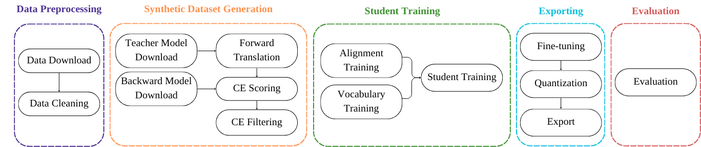

QuickStart Tutorial¶
This is a quickstart tutorial to run the OpusDistillery pipeline from scratch in your local machine for learning purposes. On this example, we will use OPUS-MT models for sequence-level distillation from a multilingual teacher into a multilingual student.
Pipeline Overview¶
Next, you can see an overview of the pipeline steps:

It mainly has four steps:
Data Preprocessing: downloads data from publicly available repositories and takes care of basic data cleaning.
Synthetic Dataset Generation: downloads the relevant teacher and backward models, forward translates all source sentences with our teacher model(s) into our target languages, computes cross-entropy scores with a backward model and then use them for filtering the synthetic dataset.
Student Training: trains a small transformer model on the filtered synthetic dataset with guided alignment.
Evaluation: evaluates the trained model.
For a more detailed description of the pipeline, check the Pipeline Steps section.
Pipeline Setup¶
For this tutorial, we will be running the pipeline locally.
Clone the repository and checkout to the multilingual branch
multi-ftt
git clone https://github.com/Helsinki-NLP/OpusDistillery.git
git checkout multi-ftt
Install Mamba - fast Conda package manager
make conda
Install Snakemake
make snakemake
Update git submodules
make git-modules
micromamba activate /home/degibert/Documents/0_Work/mambaforge mamba activate snakemake
Edit the local profile from profiles/local/config.yaml’ and enter the data directory path as the root value of the config section. This is the folder where all the outputs of the pipeline will be stored.
root=/home/degibert/Documents/0_Work/OpusDistillery/data
Make sure that everything is installed properly
source ../mambaforge/etc/profile.d/conda.sh ; conda activate ; conda activate snakemake
pip install -r requirements.txt
make dry-run CONFIG="configs/config.quickstart.yml" PROFILE="local"
Experiment Setup¶
Let’s define a simple configuration file in YAML format. We will be using the configs/config.quickstart.yml.
We define the directory structure (
data-dir/test/fiu-eng) and specify the language pairs of the student model we want to distill.
experiment:
dirname: test
name: fiu-eng
langpairs:
- et-en
- fi-en
- hu-en
We define the OPUS-MT models that we want to use for forward translation and for backward scoring:
#URL to the OPUS-MT model to use as the teacher
opusmt-teacher: "https://object.pouta.csc.fi/Tatoeba-MT-models/fiu-eng/opus4m-2020-08-12.zip"
#URL to the OPUS-MT model to use as the backward model
opusmt-backward: "https://object.pouta.csc.fi/Tatoeba-MT-models/eng-fiu/opus2m-2020-08-01.zip"
The backward model is multilingual at the target side, it has multiple target languages, so we need to specify it:
one2many-backward: True
We define the metric to select our best model.
best-model: perplexity
We define the maximum lines for splitting our files for forward translation.
split-length: 1000
Running the pipeline¶
To run the pipeline, run:
make run CONFIG="configs/config.quickstart.yml" PROFILE="local"
You can also create a directed acyclic graph to represent the steps the pipeline will take.
make dag CONFIG="configs/config.quickstart.yml" PROFILE="local"
This will create a pdf in the root directory, named DAG.pdf, with the steps for this specific run.
By default, all Snakemake rules are executed. To run the pipeline up to a specific rule use:
make run CONFIG="configs/config.quickstart.yml" PROFILE="local" TARGET="/home/degibert/Documents/0_Work/OpusDistillery/data/data/test/fiu-eng/original/et-en/devset.source.gz"